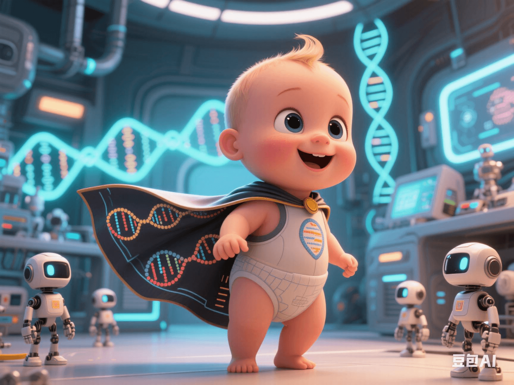

Why Do Scientists Dare to Defy the World with Gene-Edited Babies?
PeaceLove.Top Insights :2025-04-19
🌍 Gene Editing: The 'Ladder to Heaven' or the 'Forbidden Fruit' of Science?
The rapid development of gene-editing technology is like a double-edged sword, bringing unprecedented changes to fields such as medicine and agriculture, and also triggering intense ethical and legal discussions globally. Especially when the focus of gene editing falls on 'babies', the controversy among the scientific community and the public becomes even more complex. 🔪 Recently, the news of gene-edited babies has once again shocked the world, sparking a fierce dialogue between scientists and ethicists: Why do some scientists dare to defy the world and conduct this highly controversial experiment? Are they doing it for the well-being of humanity or for the pursuit of unfulfilled scientific dreams? 🤔
🧬 CRISPR Technology: A Revolutionary Breakthrough in Gene Editing
1. What is CRISPR Technology? 🔍
CRISPR (Clustered Regularly Interspaced Short Palindromic Repeats) technology is a fast, accurate, and low-cost gene-editing tool. It discovers and repairs specific genes in DNA through a bacterial immune mechanism, allowing scientists to directly 'cut' or'modify' the genetic information of organisms. The emergence of this technology is considered a revolution in the fields of gene research and gene therapy. ⚡ The application of CRISPR has penetrated into multiple fields, including the treatment of genetic diseases, agricultural improvement, and even the basic work of life-science research. However, precisely because of its powerful capabilities, it also brings many ethical issues, especially when it comes to human embryos. 🧑🔬
🚨 Ethical Controversies of Gene-Edited Babies
1. Is the 'Human Embryo' a Forbidden Zone for Gene Editing? ⚖️
The biggest controversy surrounding gene-edited babies lies in the modification of 'human embryos'. Although CRISPR technology can be used in clinical treatment of genetic diseases, the question of whether scientists have the right to modify human genes, especially to edit the genes of unborn babies, still has no unified ethical answer. 📜 In 2018, Chinese scientist He Jiankui announced the successful birth of two gene-edited babies, which caused a huge stir globally. He Jiankui modified the CCR5 gene related to HIV virus transmission for the twins, theoretically making the two babies immune to HIV for life. Although this behavior seems promising in theory, many people question whether it is possible to cross the ethical line in the name of 'eliminating disease risks'? ❌
2. Why Do Scientists Dare to 'Take Risks'? 🧑🔬
So, why do some scientists decide to continue advancing the experiment of gene-edited babies when they know there are huge ethical risks? These scientists often believe that gene-editing technology is for the treatment of certain fatal genetic diseases and has the potential to change the fate of humanity. 🔬 He Jiankui and others claim that such gene editing can eliminate the transmission of genetic diseases and lay the foundation for future gene therapy. They believe that scientific progress itself involves risks, and 'reasonable risk-taking' may be a necessary attempt for the long-term well-being of humanity. 🤖 However, this view is strongly opposed by the global scientific and ethical communities, who believe that this practice ignores the protection of 'human dignity' and may bring unpredictable consequences. 🔴
🔴 Potential Risks of Gene Editing: The 'Dark Side' of Changing Genes
1. Genetic Defects and the 'Uncontrollable Risks' of Gene Editing 🚨
Even if gene editing can effectively treat some genetic diseases, it also has unpredictable'side effects'. If human genes are modified, it may trigger other gene mutations without knowing it, and even cause new health problems or genetic defects in the next generation. 🧬 For example, gene editing may cause some seemingly harmless gene changes, but in the long run, it may lead to abnormal gene expression, resulting in side effects such as cancer and immune-system disorders. More seriously, unvalidated gene modifications may affect the human gene pool and change the evolutionary trajectory of human genes. ⚠️
2. Ethical Discussions on 'Designer Babies' and Human Evolution 👶
Many people are worried that the further development of gene editing may lead to the path of 'designer babies', that is, selecting and modifying the appearance, intelligence, etc. of babies through gene editing. This behavior may lead to increased social inequality, a further widening of the gap between the rich and the poor and genetic differences, and even cause the exclusion of 'normal humans'. 💔 This concept of 'genetic selection' not only triggers ethical controversies but also makes humanity face major considerations about interfering with and destroying its natural evolution. The question of whether humans have the right to 'design' their own offspring remains a difficult problem to solve in the fields of science and ethics. 💭
🧐 Conclusion: Balancing Scientific Progress and Ethical Boundaries
As a representative of modern biotechnology, gene-editing technology has brought revolutionary breakthroughs to medicine and human health, but it also hides huge ethical risks. The emergence of gene-edited babies has brought about profound reflections on scientific progress and ethical bottom lines. As the public and the scientific community, we should be vigilant while enjoying the benefits brought by technology and examine the potential hazards of these technologies and their impact on human society. How to find a balance between technological development and ethics will be a severe challenge for scientists and the whole society in the future. 🌍 If we choose to promote gene-editing technology, we must always adhere to the principle of human well-being and ensure that the application of this technology does not violate people's basic rights and protects the long-term interests of human society. 🔒